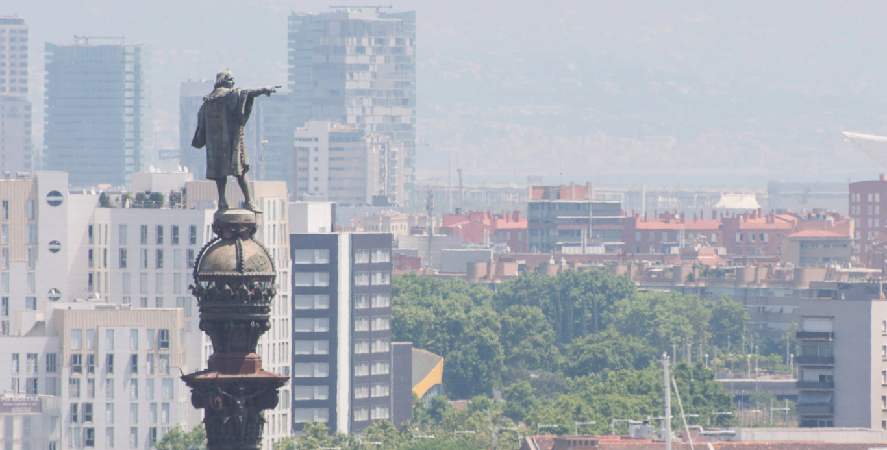

COLÓN ☛

☰
De los 64 monumentos que existen en el mundo en homenaje a Cristóbal Colón, Barcelona acoge el más alto de todos.
Está ubicado al final de La Rambla, sobre el puerto viejo de la ciudad, mide 57 metros de altura y pesa 233.000 kilogramos.
En una ciudad llena de imágenes icónicas de construcciones modernistas, este monumento de estilo antiguo clásico,
cargado de detalles y gran simbolismo, ha logrado erigirse como uno de los emblemas de Barcelona.
Construido por el arquitecto Gaietà Buïgas, fue inaugurado en 1888 dentro de la ceremonia de la Exposición Universal.
El Ayuntamiento de Barcelona propuso esta obra como tributo a Colón, quien eligió el puerto de Barcelona para
desembarcar al regresar de su viaje a América.
La estatua de bronce de Colón, obra del escultor Rafael Atché en su mano izquierda sostiene
una carta de navegar y con el brazo derecho señala, simbólicamente, la ruta hacia América.
En cuanto al tamaño del dedo índice, está desproporcionado en relación al resto de su cuerpo.
Mide 50 centímetros, en vez de los 40 que debería tener para mantener la proporcionalidad con el resto de la estatua.
Son 10 centímetros de más para que el dedo pueda ser visto mejor desde la calle.
En el interior de la columna principal del monumento se encuentra un pequeño ascensor,
de capacidad para cuatro personas. Fue el primero
que tuvo Barcelona. Permite el acceso a un mirador circular de 360 grados, que está escondido
en el interior de la corona de príncipe, debajo de la semiesfera.